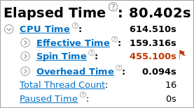
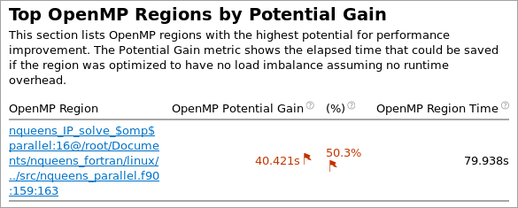
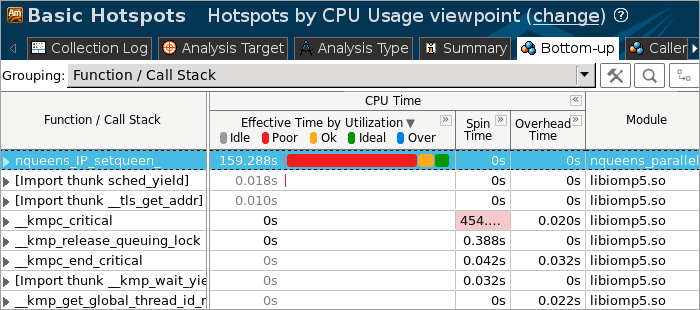
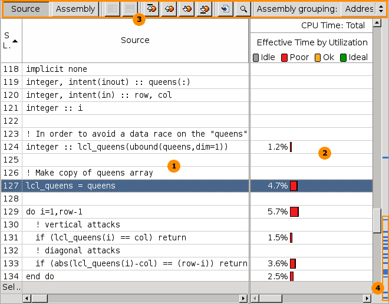

When the sample application exits, the Intel® VTune™ Amplifier
finalizes the results and opens the
Hotspots by CPU
Usage viewpoint where each window or pane is configured to display
code regions that consumed a lot of CPU time. To interpret the data on the
sample code performance, do the following:
When the sample application exits, the Intel® VTune™ Amplifier
finalizes the results and opens the
Hotspots by CPU
Usage viewpoint where each window or pane is configured to display
code regions that consumed a lot of CPU time. To interpret the data on the
sample code performance, do the following:
Note
The screenshots and execution time data provided in this tutorial are created on a system with 4 CPU cores. Your data may vary depending on the number and type of CPU cores on your system.
Explore Application-level Performance
Start analysis with the
Summary window that opens by default when data collection
completes. To interpret the data, hover over the question mark icons
 to read the pop-up help and
better understand what each performance metric means.
to read the pop-up help and
better understand what each performance metric means.

The Elapsed Time metric shows the duration of the collection including Paused Time. You may use this metric as one of the basic performance indicators.
Note that CPU Time for the sample application is equal to 614.510 seconds. It is the sum of CPU time for all application threads. Total Thread Count is 16, so the sample application is multi-threaded.
The nqueens_parallel application uses the OpenMP* threading model. VTune Amplifier analyzes performance in OpenMP parallel regions as well as serial code performance. The OpenMP Analysis section provides metrics based on the Collection Time, which is the wall time from the beginning to the end of collection, excluding Paused Time. The nqueens_parallel application ran serially only 0.464 seconds, which is 0.6% of Collection Time. According to the provided estimates, you can improve the efficiency of your code in parallel regions and get 40.422 seconds of performance gain (maximum estimate), which is 50.3% of Collection Time.
The Top OpenMP Regions by Potential Gain section displays the parallel region in the nqueens_parallel application that should be optimized.

Clicking this region opens the Bottom-up window with the data grouped by OpenMP Region and detailed statistics for the hot regions.
Analyze the Most Time-consuming Functions
Click the Bottom-up tab to explore the Bottom-up pane. By default, the data in the grid is sorted by Function. You may change the grouping level using the Grouping drop-down menu at the top of the grid.
Click the Effective Time bu Utilization to sort the hotspots functions by effective time.
The nqueens_IP_setqueen function took 159.288 seconds to execute, ineffectively using CPU resources during all this time.

Double-click the hotspot function to open the source and identify the most time-critical code lines.
Identify the Hotspot Code Region

The table below explains some of the features available in the Source window when viewing the Basic Hotspots analysis data.
|
Source pane displaying the source code of the application if the function symbol information is available. The hottest code line is highlighted. The source code in the Source pane is not editable. If the function symbol information is not available, the Assembly pane opens displaying assembler instructions for the selected hotspot function. To enable the Source pane, make sure to build the target properly. |
|
Processor time attributed to a particular code line. If the hotspot is a system function, its time, by default, is attributed to the user function that called this system function. |
|
Source window toolbar. Use the hotspot navigation buttons to switch between most performance-critical code lines. Hotspot navigation is based on the metric column selected as a Data of Interest. For the Basic Hotspots analysis, this is CPU Time. Use the Source/Assembly buttons to toggle the Source/Assembly panes (if both of them are available) on/off. |
|
Heat map markers to quickly identify performance-critical code lines (hotspots). The bright blue markers indicate hot lines for the function you selected for analysis. Light blue markers indicate hot lines for other functions. Scroll to a marker to locate the hot code line it identifies. |
By default, when you
double-click the hotspot in the Bottom-up pane, the VTune Amplifier
opens the source file related to this function with the hottest code line
highlighted. For the
nqueens_IP_setqueen function, this is
the code line that is used to create a local copy of the
queens array to avoid a data race. Click the
 Source Editor button on the
Source window toolbar to open the default code editor and work
on optimizing the code.
Source Editor button on the
Source window toolbar to open the default code editor and work
on optimizing the code.
Note
Depending on the sample code version, your source line numbers may slightly differ from the numbers provided in this tutorial.